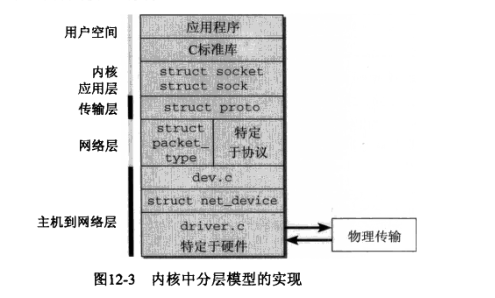
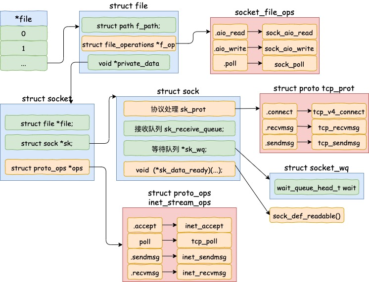
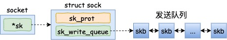
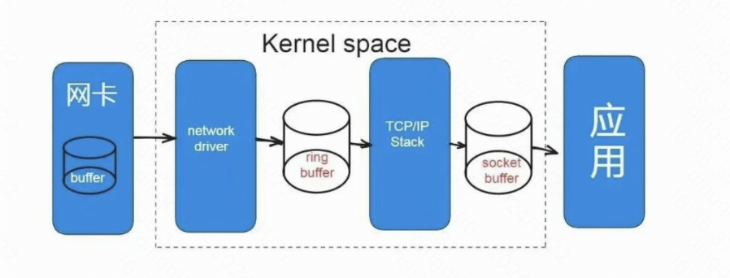

概述
- 本篇总结 Linux Net 子系统的核心架构图、核心数据结构
- 发包路径和收包路径, 每个路径上怎么监控和调优
- 以及一些常见的问题
一 内核网络层核心架构图
- 这里总结一下内核的核心实现, 方便快速掌握其核心原理

-
- 其中
dev.c是指//file: net/core/dev.c, 著名的napi_gro_receive函数和netif_receive_skb函数就是在这里实现的
- 其中
(一) 核心数据结构
1 struct softnet_data
- linux 内核通过调用 subsys_initcall 来初始化各个子系统，在源代码目录里你可以 grep 出许多对这个函数的调用。这里我们要说的是网络子系统的初始化，会执行到 net_dev_init 函数。
//file: net/core/dev.c
static int __init net_dev_init(void){
......
for_each_possible_cpu(i) {
struct softnet_data *sd = &per_cpu(softnet_data, i);
memset(sd, 0, sizeof(*sd));
skb_queue_head_init(&sd->input_pkt_queue);
skb_queue_head_init(&sd->process_queue);
sd->completion_queue = NULL;
INIT_LIST_HEAD(&sd->poll_list); /*将poll_list成员（该成员是一个struct list_head）的前驱和后置都指向自己*/
......
}
......
open_softirq(NET_TX_SOFTIRQ, net_tx_action);
open_softirq(NET_RX_SOFTIRQ, net_rx_action);
}
subsys_initcall(net_dev_init);
在这个函数里，会为每个 CPU 都申请一个 softnet_data 数据结构，在这个数据结构里的poll_list是等待驱动程序将其 poll 函数注册进来，稍后网卡驱动初始化的时候我们可以看到这一过程。
核心成员:
- poll_list.
-
- 是什么原理呢, 这里就是一个 poll 函数链表. 每次网卡有数据来时, 硬中断把自己的 poll 函数放到这个链表里来.
-
- 是一个链表，后续将 struct napi_struct 加入 softnet_data 结构中 poll_list 链表里来，就可以通过 softnet_data 的 poll_list 链表遍历所有的 napi_struct 实例，每个 napi_struct 实例其实包含了特定于网卡的 poll 函数，后续调用 napi_struct 的 poll 函数其实就是调用网卡的 poll 函数.
-
-
- 并且这里说的网卡, 比如是 igb 网卡，那么其实指的是 struct igb_q_vector 结构，该结构表示 igb 网卡的一个队列,每个 igb 网卡可以有 8 个队列，每个队列对应一个真实的硬中断号.
-
list_add_tail(&napi->poll_list, &sd->poll_list);
也就是说待会儿内核跑软中断时,要执行我的poll函数(这里我就是一张网卡)
- 软中断阶段:
static void net_rx_action(struct softirq_action *h){
struct softnet_data *sd = &__get_cpu_var(softnet_data);
unsigned long time_limit = jiffies + 2;
int budget = netdev_budget;
void *have;
local_irq_disable();
while (!list_empty(&sd->poll_list)) {
......
n = list_first_entry(&sd->poll_list, struct napi_struct, poll_list);
work = 0;
if (test_bit(NAPI_STATE_SCHED, &n->state)) {
work = n->poll(n, weight);
trace_napi_poll(n);
}
budget -= work;
}
}
简单理解就是在跑特定于网卡的poll函数.
2 struct net_protocol
- 代表一个传输层协议，比如 tcp、udp
static const struct net_protocol tcp_protocol = {
.early_demux = tcp_v4_early_demux,
.handler = tcp_v4_rcv,
.err_handler = tcp_v4_err,
.no_policy = 1,
.netns_ok = 1,
};
static const struct net_protocol udp_protocol = {
.handler = udp_rcv,
.err_handler = udp_err,
.no_policy = 1,
.netns_ok = 1
};
2.1 inet_protos[MAX_INET_PROTOS] 数组
-
inet_protos是一个全局的指针数组, 存有所有net_protocol
-
const struct net_protocol __rcu *inet_protos[MAX_INET_PROTOS] __read_mostly; -
- 其中 MAX_INET_PROTOS 为 256
-
include/net/protocol.h:38:#define MAX_INET_PROTOS 256
2.2 ptype_base 哈希表
net/core/dev.c:146:struct list_head ptype_base[PTYPE_HASH_SIZE] __read_mostly;#define PTYPE_HASH_SIZE (16)
3 struct net
- 网络命名空间
struct net 结构体表示的内核中的网络命名空间(net_namespace)。在 linux 内核中，每一个网络设备(struct net_device)都有一个所属的网络命名空间
网络系统在初始化的时候会初始化一个初始网络命名空间，即 init_net 命名空间。后续创建的 net namespace 命名空间会和 init_net 一起通过 list 项组织起来，且每个网络设备都对应一个命名空间，同一命名空间下的网络设备通过 dev_base_head 组织在一起。组织结构如下:

struct net 内的一些重要成员：
struct net_device *loopback_dev;
4 struct net_device
- 内核层面描述一张网卡
-
每个 struct net, 都至少有一个环回接口 lo, 该接口就是用 struct net_device 表示
-
- 并且注册 net_device(
register_netdev(struct net_device *dev))是注册到一个链表中
- 并且注册 net_device(
-
struct net_device can be conceptually divided into two parts: visible and invisible. net_device 结构体(有众多成员，总体来说成员)可以分为两个部分： 可见和不可见.
-
内核使用 net_device 表示网卡。网卡可以分为物理网卡和虚拟网卡。物理网卡是指真正能把报文发出本机的网卡，包括真实物理机的网卡以及 VM 虚拟机的网卡，而像 tun/tap，vxlan、veth pair 这样的则属于虚拟网卡的范畴。
-
如下图所示，每个网卡都有两端，一端是协议栈(IP、TCP、UDP)，另一端则有所区别，对物理网卡来说，这一端是网卡生产厂商提供的设备驱动程序，而对虚拟网卡来说差别就大了，正是由于虚拟网卡的存在，内核才能支持各种隧道封装、容器通信等功能。
- net_device 源码如下:
struct net_device {
/*
* This is the first field of the "visible" part of this structure
* (i.e. as seen by users in the "Space.c" file). It is the name
* of the interface.
*/
char name[IFNAMSIZ];
/* device name hash chain, please keep it close to name[] */
struct hlist_node name_hlist;
/* snmp alias */
char *ifalias;
/*
* I/O specific fields
* FIXME: Merge these and struct ifmap into one
*/
unsigned long mem_end; /* shared mem end */
unsigned long mem_start; /* shared mem start */
unsigned long base_addr; /* device I/O address */
int irq; /* device IRQ number */
/*
* Some hardware also needs these fields, but they are not
* part of the usual set specified in Space.c.
*/
unsigned long state;
struct list_head dev_list;
struct list_head napi_list;
struct list_head unreg_list;
struct list_head close_list;
/* directly linked devices, like slaves for bonding */
struct {
struct list_head upper;
struct list_head lower;
} adj_list;
/* all linked devices, *including* neighbours */
struct {
struct list_head upper;
struct list_head lower;
} all_adj_list;
/* currently active device features */
netdev_features_t features;
/* user-changeable features */
netdev_features_t hw_features;
/* user-requested features */
netdev_features_t wanted_features;
/* mask of features inheritable by VLAN devices */
netdev_features_t vlan_features;
/* mask of features inherited by encapsulating devices
* This field indicates what encapsulation offloads
* the hardware is capable of doing, and drivers will
* need to set them appropriately.
*/
netdev_features_t hw_enc_features;
/* mask of fetures inheritable by MPLS */
netdev_features_t mpls_features;
/* Interface index. Unique device identifier */
int ifindex;
int iflink;
struct net_device_stats stats;
/* dropped packets by core network, Do not use this in drivers */
atomic_long_t rx_dropped;
atomic_long_t tx_dropped;
/* Stats to monitor carrier on<->off transitions */
atomic_t carrier_changes;
#ifdef CONFIG_WIRELESS_EXT
/* List of functions to handle Wireless Extensions (instead of ioctl).
* See <net/iw_handler.h> for details. Jean II */
const struct iw_handler_def * wireless_handlers;
/* Instance data managed by the core of Wireless Extensions. */
struct iw_public_data * wireless_data;
#endif
/* Management operations */
const struct net_device_ops *netdev_ops;
const struct ethtool_ops *ethtool_ops;
const struct forwarding_accel_ops *fwd_ops;
/* Hardware header description */
const struct header_ops *header_ops;
unsigned int flags; /* interface flags (a la BSD) */
unsigned int priv_flags; /* Like 'flags' but invisible to userspace.
* See if.h for definitions. */
unsigned short gflags;
unsigned short padded; /* How much padding added by alloc_netdev() */
unsigned char operstate; /* RFC2863 operstate */
unsigned char link_mode; /* mapping policy to operstate */
unsigned char if_port; /* Selectable AUI, TP,..*/
unsigned char dma; /* DMA channel */
unsigned int mtu; /* interface MTU value */
unsigned short type; /* interface hardware type */
unsigned short hard_header_len; /* hardware hdr length */
/* extra head- and tailroom the hardware may need, but not in all cases
* can this be guaranteed, especially tailroom. Some cases also use
* LL_MAX_HEADER instead to allocate the skb.
*/
unsigned short needed_headroom;
unsigned short needed_tailroom;
/* Interface address info. */
unsigned char perm_addr[MAX_ADDR_LEN]; /* permanent hw address */
unsigned char addr_assign_type; /* hw address assignment type */
unsigned char addr_len; /* hardware address length */
unsigned short neigh_priv_len;
unsigned short dev_id; /* Used to differentiate devices
* that share the same link
* layer address
*/
unsigned short dev_port; /* Used to differentiate
* devices that share the same
* function
*/
spinlock_t addr_list_lock;
struct netdev_hw_addr_list uc; /* Unicast mac addresses */
struct netdev_hw_addr_list mc; /* Multicast mac addresses */
struct netdev_hw_addr_list dev_addrs; /* list of device
* hw addresses
*/
#ifdef CONFIG_SYSFS
struct kset *queues_kset;
#endif
bool uc_promisc;
unsigned int promiscuity;
unsigned int allmulti;
/* Protocol specific pointers */
#if IS_ENABLED(CONFIG_VLAN_8021Q)
struct vlan_info __rcu *vlan_info; /* VLAN info */
#endif
#if IS_ENABLED(CONFIG_NET_DSA)
struct dsa_switch_tree *dsa_ptr; /* dsa specific data */
#endif
#if IS_ENABLED(CONFIG_TIPC)
struct tipc_bearer __rcu *tipc_ptr; /* TIPC specific data */
#endif
void *atalk_ptr; /* AppleTalk link */
struct in_device __rcu *ip_ptr; /* IPv4 specific data 在这个结构体中存放ipv4地址*/
struct dn_dev __rcu *dn_ptr; /* DECnet specific data */
struct inet6_dev __rcu *ip6_ptr; /* IPv6 specific data */
void *ax25_ptr; /* AX.25 specific data */
struct wireless_dev *ieee80211_ptr; /* IEEE 802.11 specific data,
assign before registering */
/*
* Cache lines mostly used on receive path (including eth_type_trans())
*/
unsigned long last_rx; /* Time of last Rx */
/* Interface address info used in eth_type_trans() */
unsigned char *dev_addr; /* hw address, (before bcast
because most packets are
unicast) */
#ifdef CONFIG_SYSFS
struct netdev_rx_queue *_rx;
/* Number of RX queues allocated at register_netdev() time */
unsigned int num_rx_queues;
/* Number of RX queues currently active in device */
unsigned int real_num_rx_queues;
#endif
rx_handler_func_t __rcu *rx_handler;
void __rcu *rx_handler_data;
struct netdev_queue __rcu *ingress_queue;
unsigned char broadcast[MAX_ADDR_LEN]; /* hw bcast add */
/*
* Cache lines mostly used on transmit path
*/
struct netdev_queue *_tx ____cacheline_aligned_in_smp;
/* Number of TX queues allocated at alloc_netdev_mq() time */
unsigned int num_tx_queues;
/* Number of TX queues currently active in device */
unsigned int real_num_tx_queues;
/* root qdisc from userspace point of view */
struct Qdisc *qdisc;
unsigned long tx_queue_len; /* Max frames per queue allowed */
spinlock_t tx_global_lock;
#ifdef CONFIG_XPS
struct xps_dev_maps __rcu *xps_maps;
#endif
#ifdef CONFIG_RFS_ACCEL
/* CPU reverse-mapping for RX completion interrupts, indexed
* by RX queue number. Assigned by driver. This must only be
* set if the ndo_rx_flow_steer operation is defined. */
struct cpu_rmap *rx_cpu_rmap;
#endif
/* These may be needed for future network-power-down code. */
/*
* trans_start here is expensive for high speed devices on SMP,
* please use netdev_queue->trans_start instead.
*/
unsigned long trans_start; /* Time (in jiffies) of last Tx */
int watchdog_timeo; /* used by dev_watchdog() */
struct timer_list watchdog_timer;
/* Number of references to this device */
int __percpu *pcpu_refcnt;
/* delayed register/unregister */
struct list_head todo_list;
/* device index hash chain */
struct hlist_node index_hlist;
struct list_head link_watch_list;
/* register/unregister state machine */
enum { NETREG_UNINITIALIZED=0,
NETREG_REGISTERED, /* completed register_netdevice */
NETREG_UNREGISTERING, /* called unregister_netdevice */
NETREG_UNREGISTERED, /* completed unregister todo */
NETREG_RELEASED, /* called free_netdev */
NETREG_DUMMY, /* dummy device for NAPI poll */
} reg_state:8;
bool dismantle; /* device is going do be freed */
enum {
RTNL_LINK_INITIALIZED,
RTNL_LINK_INITIALIZING,
} rtnl_link_state:16;
/* Called from unregister, can be used to call free_netdev */
void (*destructor)(struct net_device *dev);
#ifdef CONFIG_NETPOLL
struct netpoll_info __rcu *npinfo;
#endif
#ifdef CONFIG_NET_NS
/* Network namespace this network device is inside */
struct net *nd_net;
#endif
/* mid-layer private */
union {
void *ml_priv;
struct pcpu_lstats __percpu *lstats; /* loopback stats */
struct pcpu_sw_netstats __percpu *tstats;
struct pcpu_dstats __percpu *dstats; /* dummy stats */
struct pcpu_vstats __percpu *vstats; /* veth stats */
};
/* GARP */
struct garp_port __rcu *garp_port;
/* MRP */
struct mrp_port __rcu *mrp_port;
/* class/net/name entry */
struct device dev;
/* space for optional device, statistics, and wireless sysfs groups */
const struct attribute_group *sysfs_groups[4];
/* space for optional per-rx queue attributes */
const struct attribute_group *sysfs_rx_queue_group;
/* rtnetlink link ops */
const struct rtnl_link_ops *rtnl_link_ops;
/* for setting kernel sock attribute on TCP connection setup */
#define GSO_MAX_SIZE 65536
unsigned int gso_max_size;
#define GSO_MAX_SEGS 65535
u16 gso_max_segs;
#ifdef CONFIG_DCB
/* Data Center Bridging netlink ops */
const struct dcbnl_rtnl_ops *dcbnl_ops;
#endif
u8 num_tc;
struct netdev_tc_txq tc_to_txq[TC_MAX_QUEUE];
u8 prio_tc_map[TC_BITMASK + 1];
#if IS_ENABLED(CONFIG_FCOE)
/* max exchange id for FCoE LRO by ddp */
unsigned int fcoe_ddp_xid;
#endif
#if IS_ENABLED(CONFIG_CGROUP_NET_PRIO)
struct netprio_map __rcu *priomap;
#endif
/* phy device may attach itself for hardware timestamping */
struct phy_device *phydev;
struct lock_class_key *qdisc_tx_busylock;
/* group the device belongs to */
int group;
struct pm_qos_request pm_qos_req;
};
4.1 ptype_base 和 ptype_all
- ptype_base 为一个 hash 表,而 ptype_all 为一个双向链表.每一个里面注册的协议都用一个 struct packet_type 表示. packet_type 数据结构包含协议类型、指向网络设备的指针、指向协议的接收数据处理例程的指针, 如下：
struct packet_type
{
unsigned short type; /*协议类型*/
struct net_device *dev;
int (*func) (struct sk_buff *, struct net_device *,
struct packet_type *);
void *data; /* Private to the packet type */
struct packet_type *next;
};
-
func 是该结构体主要成员，指向网络层的一个函数。如果分组的类型适当，就将其传给对应的处理函数，其中 ip 包的处理函数就是
ip_rcv. -
netif_receive_skb()函数，遍历ptype_all链表，找到合适的packet_type, 然后调用其func指针指向的处理函数(比如ip_rcv())
4.2 struct in_device （IP 配置块）
struct in_device
{
struct net_device *dev; // 回指网络设备
atomic_t refcnt;
// 当一个IP配置块将要被销毁时，先设置该标记为1，当引用计数为0时再执行内存回收
int dead;
// 每个网络设备可以配置多个IP地址，所以是列表
struct in_ifaddr *ifa_list; /* IP ifaddr chain */
// 多播相关的结构
rwlock_t mc_list_lock;
struct ip_mc_list *mc_list; /* IP multicast filter chain */
spinlock_t mc_tomb_lock;
struct ip_mc_list *mc_tomb;
unsigned long mr_v1_seen;
unsigned long mr_v2_seen;
unsigned long mr_maxdelay;
unsigned char mr_qrv;
unsigned char mr_gq_running;
unsigned char mr_ifc_count;
struct timer_list mr_gq_timer; /* general query timer */
struct timer_list mr_ifc_timer; /* interface change timer */
// 网络设备定义的邻居子系统配置参数
struct neigh_parms *arp_parms;
// 影响该网络设备的IP系统配置
struct ipv4_devconf cnf;
// 使用RCU机制回收IP配置块
struct rcu_head rcu_head;
};
4.3 struct in_ifaddr （IPv4 地址）
struct in_ifaddr
{
struct in_ifaddr *ifa_next; // 同一个网络设备上配置的IP地址组成成链表
struct in_device *ifa_dev; // 回指网络设备
struct rcu_head rcu_head; // 使用RCU保护本IP地址的修改
// 对于支持广播的网络，ifa_local和ifa_address一样保存的都是本端地址；
// 对于点对点网络，ifa_address保存的是对端IP地址
__be32 ifa_local;
__be32 ifa_address;
__be32 ifa_mask; // 子网掩码
__be32 ifa_broadcast; // 广播地址
__be32 ifa_anycast;
unsigned char ifa_scope; // IP地址作用域，见下文
unsigned char ifa_flags;
unsigned char ifa_prefixlen; // 子网掩码长度
char ifa_label[IFNAMSIZ]; // 网络地址别名
};
5 struct net_device_ops
- 每个 net_device 具备的一些能力, 比如 open,read,write,poll,ioctl 等
- net_device_ops 核心描述符内包含了驱动程序填充的各类函数, 包括发送、接收数据包
以 net/ethernet/intel/igb/igb_main.c(igb 网卡驱动) 为例子, 包含了open,close,xmit,ioctl 等各种实现
/file: drivers/net/ethernet/intel/igb/igb_main.c
static const struct net_device_ops igb_netdev_ops = {
.ndo_open = igb_open,
.ndo_stop = igb_close,
.ndo_start_xmit = igb_xmit_frame,
.ndo_get_stats64 = igb_get_stats64,
.ndo_set_rx_mode = igb_set_rx_mode,
.ndo_set_mac_address = igb_set_mac,
.ndo_change_mtu = igb_change_mtu,
.ndo_do_ioctl = igb_ioctl,
.ndo_tx_timeout = igb_tx_timeout,
.ndo_validate_addr = eth_validate_addr,
.ndo_vlan_rx_add_vid = igb_vlan_rx_add_vid,
.ndo_vlan_rx_kill_vid = igb_vlan_rx_kill_vid,
.ndo_set_vf_mac = igb_ndo_set_vf_mac,
.ndo_set_vf_vlan = igb_ndo_set_vf_vlan,
.ndo_set_vf_rate = igb_ndo_set_vf_bw,
.ndo_set_vf_spoofchk = igb_ndo_set_vf_spoofchk,
.ndo_get_vf_config = igb_ndo_get_vf_config,
#ifdef CONFIG_NET_POLL_CONTROLLER
.ndo_poll_controller = igb_netpoll,
#endif
.ndo_fix_features = igb_fix_features,
.ndo_set_features = igb_set_features,
};
5.1 struct ethtool_ops
以net/ethernet/intel/igb/igb_ethool.c为例，这里注册了 igb 网卡对 ethool 的支持.
static const struct ethtool_ops igb_ethtool_ops = {
.get_settings = igb_get_settings,
.set_settings = igb_set_settings,
.get_drvinfo = igb_get_drvinfo,
.get_regs_len = igb_get_regs_len,
.get_regs = igb_get_regs,
.get_wol = igb_get_wol,
.set_wol = igb_set_wol,
.get_msglevel = igb_get_msglevel,
.set_msglevel = igb_set_msglevel,
.nway_reset = igb_nway_reset,
.get_link = igb_get_link,
.get_eeprom_len = igb_get_eeprom_len,
.get_eeprom = igb_get_eeprom,
.set_eeprom = igb_set_eeprom,
.get_ringparam = igb_get_ringparam,
.set_ringparam = igb_set_ringparam,
.get_pauseparam = igb_get_pauseparam,
.set_pauseparam = igb_set_pauseparam,
.self_test = igb_diag_test,
.get_strings = igb_get_strings,
.set_phys_id = igb_set_phys_id,
.get_sset_count = igb_get_sset_count,
.get_ethtool_stats = igb_get_ethtool_stats,
.get_coalesce = igb_get_coalesce,
.set_coalesce = igb_set_coalesce,
.get_ts_info = igb_get_ts_info,
.get_rxnfc = igb_get_rxnfc,
.set_rxnfc = igb_set_rxnfc,
.get_eee = igb_get_eee,
.set_eee = igb_set_eee,
.get_module_info = igb_get_module_info,
.get_module_eeprom = igb_get_module_eeprom,
.get_rxfh_indir_size = igb_get_rxfh_indir_size,
.get_rxfh = igb_get_rxfh,
.set_rxfh = igb_set_rxfh,
.get_channels = igb_get_channels,
.set_channels = igb_set_channels,
.begin = igb_ethtool_begin,
.complete = igb_ethtool_complete,
};
void igb_set_ethtool_ops(struct net_device *netdev)
{
netdev->ethtool_ops = &igb_ethtool_ops;
}
6 struct napi_struct
struct napi_struct {
/* The poll_list must only be managed by the entity which
* changes the state of the NAPI_STATE_SCHED bit. This means
* whoever atomically sets that bit can add this napi_struct
* to the per-cpu poll_list, and whoever clears that bit
* can remove from the list right before clearing the bit.
*/
struct list_head poll_list;
unsigned long state; // state 可以是 NAPI_STATE_SCHED 或 NAPI_STATE_DISABLE，前者表示设备将在内核的下一次循环时被轮询，后者表示轮询己经结束且没有更多的分组等待处理，但设备尚未从轮询表移除。
int weight;
unsigned int gro_count;
int (*poll)(struct napi_struct *, int); //核心成员, 特定于硬件的poll函数
#ifdef CONFIG_NETPOLL
spinlock_t poll_lock;
int poll_owner;
#endif
struct net_device *dev;
struct sk_buff *gro_list;
struct sk_buff *skb;
struct list_head dev_list;
struct hlist_node napi_hash_node;
unsigned int napi_id;
};
struct napi_struct该结构用于管理轮询表上的设备。其定义如下:
<netdevice.h>
struct napi_struct {
struct list_head poll_list;
unsigned long state;
int weight;
int (*poll) (struct napi_struct *, int)
};
-
轮询表通过一个标准的内核双链表实现，poll_list 用作链表元素。weight 和 poll 的语义同上文 所述。state 可以是 NAPI_STATE_SCHED 或 NAPI_STATE_DISABLE，前者表示设备将在内核的下一次循环时被轮询，后者表示轮询己经结束且没有更多的分组等待处理，但设备尚未从轮询表移除。 请注意，
struct napi_struct经常嵌入到 一个更大的结构中，后者包含了与网卡有关的、特定 手驱 动 稈 序 的 数 据 。 这 样 在 内 核 使 用 poll 函数 轮 询 网 卡 时 ， 可 用 container_of 机 制 获 得 相 关 信 息 。 -
实现 poll 函数需要两个參数:一个指向 napi_struct 实例的指针和一个指定了“预算” 的整数，预算 表示内核允许驱动程序处理的分组数目。
7 sk_buff 结构体
-
sk_buff 是 Linux 网络中最核心的结构体，它用来管理和控制接收或发送数据包的信息。 各层协议都依赖于 sk_buff 而存在。
-
struct sk_buff 是 linux 网络系统中的核心结构体，linux 网络中的所有数据包的封装以及解封装都是在这个结构体的基础上进行。
-
内核中 sk_buff 结构体在各层协议之间传输不是用拷贝 sk_buff 结构体，而是通过增加协议头和移动指针来操作的。如果是从 L4 传输到 L2，则是通过往 sk_buff 结构体中增加该层协议头来操作；如果是从 L4 到 L2，则是通过移动 sk_buff 结构体中的 data 指针来实现，不会删除各层协议头。这样做是为了提高 CPU 的工作效率。
7.1 详细代码
include/linux/skbuff.h(sk_buff 结构定义和 sk_buff 宏)
struct sk_buff {
/* These two members must be first. */
struct sk_buff *next;
struct sk_buff *prev;
struct sock *sk;
struct skb_timeval tstamp;
struct net_device *dev;
struct net_device *input_dev;
union {
struct tcphdr *th;
struct udphdr *uh;
struct icmphdr *icmph;
struct igmphdr *igmph;
struct iphdr *ipiph;
struct ipv6hdr *ipv6h;
unsigned char *raw;
} h;
union {
struct iphdr *iph;
struct ipv6hdr *ipv6h;
struct arphdr *arph;
unsigned char *raw;
} nh;
union {
unsigned char *raw;
} mac;
struct dst_entry *dst;
struct sec_path *sp;
....// 更多成员
}
-
内核显然需要一个数据结构来表示报文，这个结构就是 sk_buff ( socket buffer 的简称)，它等同于在
<TCP/IP详解 卷2>中描述的 BSD 内核中的 mbuf。 -
sk_buff 结构自身并不存储报文内容，它通过多个指针指向真正的报文内存空间:
- sk_buff 是一个贯穿整个协议栈层次的结构，在各层间传递时，内核只需要调整 sk_buff 中的指针位置就行。
7.2 sk_buff_head
- 其实就是一个双向链表
struct sk_buff_head
{
struct sk_buff *next;
struct sk_buff *prev;
__u32 qlen;
spinlock_t lock;
}
-
struct sock中的sk_write_queue成员, 代表发送队列, 就是一个struct sk_buff_head.
-
-
@sk_write_queue: Packet sending queue
-
-
struct sock中的sk_receive_queue成员, 代表接收队列, 也是一个struct sk_buff_head.
-
-
@sk_receive_queue: incoming packets
-
-
include/net/sock.h
struct sock {
...
struct sk_buff_head sk_write_queue;
struct sk_buff_head sk_receive_queue;
...
}
8 struct proto tcp_prot
在发送数据之前，我们往往还需要一个已经建立好连接的 socket。
我们就以开篇服务器缩微源代码中提到的 accept 为例，当 accept 之后，进程会创建一个新的 socket 出来，然后把它放到当前进程的打开文件列表中，专门用于和对应的客户端通信。
假设服务器进程通过 accept 和客户端建立了两条连接，我们来简单看一下这两条连接和进程的关联关系。

其中代表一条连接的 socket 内核对象更为具体一点的结构图如下。

Linux 内核网络层实现时, 总是分为三层:
-
-
- BSD socket 对象
-
-
-
- inet 协议族
-
-
-
- 具体协议,比如 tcp
-
-
- 按照经典的描述符+ops思想, 对应inet socket的操作能力是用结构体
struct proto_ops表示, 比如 inet 层一些操作是用struct proto_ops inet_stream_ops结构体表示, 具体协议层 sock的操作能力是用结构体struct proto表示, 比如 tcp 层一些操作是用struct proto tcp_prot结构体表示.
- 按照经典的描述符+ops思想, 对应inet socket的操作能力是用结构体
-
struct proto udp_prot = {定义在net/ipv4/udp.c:2650
-
struct proto tcp_prot = {定义在net/ipv4/tcp_ipv4.c:2447
net/ipv4/tcp_ipv4.c
struct proto tcp_prot = {
.name = "TCP",
.owner = THIS_MODULE,
.close = tcp_close,
.connect = tcp_v4_connect,
.disconnect = tcp_disconnect,
.accept = inet_csk_accept,
.ioctl = tcp_ioctl,
.init = tcp_v4_init_sock,
.destroy = tcp_v4_destroy_sock,
.shutdown = tcp_shutdown,
.setsockopt = tcp_setsockopt,
.getsockopt = tcp_getsockopt,
.recvmsg = tcp_recvmsg,
.sendmsg = tcp_sendmsg,
.sendpage = tcp_sendpage,
.backlog_rcv = tcp_v4_do_rcv,
.release_cb = tcp_release_cb,
.hash = inet_hash,
.unhash = inet_unhash,
.get_port = inet_csk_get_port,
.enter_memory_pressure = tcp_enter_memory_pressure,
.stream_memory_free = tcp_stream_memory_free,
.sockets_allocated = &tcp_sockets_allocated,
.orphan_count = &tcp_orphan_count,
.memory_allocated = &tcp_memory_allocated,
.memory_pressure = &tcp_memory_pressure,
.sysctl_mem = sysctl_tcp_mem,
.sysctl_wmem = sysctl_tcp_wmem,
.sysctl_rmem = sysctl_tcp_rmem,
.max_header = MAX_TCP_HEADER,
.obj_size = sizeof(struct tcp_sock),
.slab_flags = SLAB_DESTROY_BY_RCU,
.twsk_prot = &tcp_timewait_sock_ops,
.rsk_prot = &tcp_request_sock_ops,
.h.hashinfo = &tcp_hashinfo,
.no_autobind = true,
#ifdef CONFIG_COMPAT
.compat_setsockopt = compat_tcp_setsockopt,
.compat_getsockopt = compat_tcp_getsockopt,
#endif
#ifdef CONFIG_MEMCG_KMEM
.init_cgroup = tcp_init_cgroup,
.destroy_cgroup = tcp_destroy_cgroup,
.proto_cgroup = tcp_proto_cgroup,
#endif
};
-
struct proto {定义在include/net/sock.h:1048
net/ipv4/af_inet.c
const struct proto_ops inet_stream_ops = {
.family = PF_INET,
.owner = THIS_MODULE,
.release = inet_release,
.bind = inet_bind,
.connect = inet_stream_connect,
.socketpair = sock_no_socketpair,
.accept = inet_accept,
.getname = inet_getname,
.poll = tcp_poll,
.ioctl = inet_ioctl,
.listen = inet_listen,
.shutdown = inet_shutdown,
.setsockopt = sock_common_setsockopt,
.getsockopt = sock_common_getsockopt,
.sendmsg = inet_sendmsg,
.recvmsg = inet_recvmsg,
.mmap = sock_no_mmap,
.sendpage = inet_sendpage,
.splice_read = tcp_splice_read,
#ifdef CONFIG_COMPAT
.compat_setsockopt = compat_sock_common_setsockopt,
.compat_getsockopt = compat_sock_common_getsockopt,
.compat_ioctl = inet_compat_ioctl,
#endif
};
8.1 关于 socket 和 inet 和 proto 的说明
I think the question is the most headache problem when a newbie try to create a new protocol
-
Explain: Both structures have member elements with similar names although they represent different functions
-
- struct proto_ops: used for communication between socket layer and transport layer
-
- struct proto: used for communicate with system calls
-
Example: when you call a system call in userspace, ex connect(), prot_ops_connect() will be call first.
In fucntion prot_ops_connect(), we need to call sk->sk_prot->connect()
And sk->sk_prot->connect() will call proto_connect() automatically
也就是说其实分两层, struct proto_ops 用于 socket 层和传输层交互. proto 用于方便实现系统调用.
-
- 另外, Linux 内核网络层实现时, 总是分为三层:
-
-
- BSD socket 对象
-
-
-
- inet 协议族
-
-
-
- 具体协议,比如 tcp
-
-
参考understand 'struct proto' and 'struct proto_ops' in the kernel
9 tcp sock 对象的发送队列是一个链表
skb 是 struct sk_buff 对象的简称，用户的发送队列就是该对象组成的一个链表。

- 另外针对服务端、针对其监听的某个tcp端口，有全连接和半连接队列的概念.
- 针对具体某个tcp sock对象, 有sk_write_queue和sk_receive_queue概念.
10 struct sock 讲解
- struct socket 是在虚拟文件系统上被创建出来的，可以把它看成一个文件。
- struct sock 是网络层对于 socket 的表示，结构体比较庞大.
10.1 socket 和 sock 是同一事物的两个侧面，为什么不把两个数据结构合并成一个呢?
- 这是因为 socket 是 inode 结构中的一部分，即把 inode 结 构内部的一个 union 用作 socket 结构。由于插口操作的特殊性，这个数据结构中需要有大量的结构成分，如果把这些成分全部放到 socket 结构中，则 inode 结构中的这个 union 就会变得很大，从而 inode 结构也会变得很大，而对于其他文件系统这个 union 是不需要这么大的， 所以会造成巨大浪费，系统中使用 inode 结构的数量要远远超过使用 socket 的数量，故解决的办法就是把插口分成两部分，把与文件系 统关系密切的放在 socket 结构中，把与通信关系密切的放在另一个单独结构 sock 中；
struct inode {
.....................
union {
struct ext2_inode_info ext2_i;
struct ext3_inode_info ext3_i;
struct socket socket_i;
.....................
} u;
};
struct socket
{
socket_state state; // 该state用来表明该socket的当前状态
typedef enum {
SS_FREE = 0, /* not allocated */
SS_UNCONNECTED, /* unconnected to any socket */
SS_CONNECTING, /* in process of connecting */
SS_CONNECTED, /* connected to socket */
SS_DISCONNECTING /* in process of disconnecting */
} socket_state;
unsigned long flags; //该成员可能的值如下，该标志用来设置socket是否正在忙碌
#define SOCK_ASYNC_NOSPACE 0
#define SOCK_ASYNC_WAITDATA 1
#define SOCK_NOSPACE 2
struct proto_ops *ops; //依据协议邦定到该socket上的特定的协议族的操作函数指针，例如IPv4 TCP就是inet_stream_ops
struct inode *inode; //表明该socket所属的inode
struct fasync_struct *fasync_list; //异步唤醒队列
struct file *file; //file回指指针
struct sock *sk; //sock指针
wait_queue_head_t wait; //sock的等待队列，在TCP需要等待时就sleep在这个队列上
short type; //表示该socket在特定协议族下的类型例如SOCK_STREAM,
unsigned char passcred; //在TCP分析中无须考虑
};
/**
* struct sock - network layer representation of sockets
* @__sk_common: shared layout with inet_timewait_sock
* @sk_shutdown: mask of %SEND_SHUTDOWN and/or %RCV_SHUTDOWN
* @sk_userlocks: %SO_SNDBUF and %SO_RCVBUF settings
* @sk_lock: synchronizer
* @sk_rcvbuf: size of receive buffer in bytes
* @sk_wq: sock wait queue and async head
* @sk_rx_dst: receive input route used by early demux
* @sk_dst_cache: destination cache
* @sk_dst_lock: destination cache lock
* @sk_policy: flow policy
* @sk_receive_queue: incoming packets
* @sk_wmem_alloc: transmit queue bytes committed
* @sk_write_queue: Packet sending queue
* @sk_async_wait_queue: DMA copied packets
* @sk_omem_alloc: "o" is "option" or "other"
* @sk_wmem_queued: persistent queue size
* @sk_forward_alloc: space allocated forward
* @sk_napi_id: id of the last napi context to receive data for sk
* @sk_ll_usec: usecs to busypoll when there is no data
* @sk_allocation: allocation mode
* @sk_pacing_rate: Pacing rate (if supported by transport/packet scheduler)
* @sk_max_pacing_rate: Maximum pacing rate (%SO_MAX_PACING_RATE)
* @sk_sndbuf: size of send buffer in bytes
* @sk_flags: %SO_LINGER (l_onoff), %SO_BROADCAST, %SO_KEEPALIVE,
* %SO_OOBINLINE settings, %SO_TIMESTAMPING settings
* @sk_no_check_tx: %SO_NO_CHECK setting, set checksum in TX packets
* @sk_no_check_rx: allow zero checksum in RX packets
* @sk_route_caps: route capabilities (e.g. %NETIF_F_TSO)
* @sk_route_nocaps: forbidden route capabilities (e.g NETIF_F_GSO_MASK)
* @sk_gso_type: GSO type (e.g. %SKB_GSO_TCPV4)
* @sk_gso_max_size: Maximum GSO segment size to build
* @sk_gso_max_segs: Maximum number of GSO segments
* @sk_lingertime: %SO_LINGER l_linger setting
* @sk_backlog: always used with the per-socket spinlock held
* @sk_callback_lock: used with the callbacks in the end of this struct
* @sk_error_queue: rarely used
* @sk_prot_creator: sk_prot of original sock creator (see ipv6_setsockopt,
* IPV6_ADDRFORM for instance)
* @sk_err: last error
* @sk_err_soft: errors that don't cause failure but are the cause of a
* persistent failure not just 'timed out'
* @sk_drops: raw/udp drops counter
* @sk_ack_backlog: current listen backlog
* @sk_max_ack_backlog: listen backlog set in listen()
* @sk_priority: %SO_PRIORITY setting
* @sk_cgrp_prioidx: socket group's priority map index
* @sk_type: socket type (%SOCK_STREAM, etc)
* @sk_protocol: which protocol this socket belongs in this network family
* @sk_peer_pid: &struct pid for this socket's peer
* @sk_peer_cred: %SO_PEERCRED setting
* @sk_rcvlowat: %SO_RCVLOWAT setting
* @sk_rcvtimeo: %SO_RCVTIMEO setting
* @sk_sndtimeo: %SO_SNDTIMEO setting
* @sk_rxhash: flow hash received from netif layer
* @sk_filter: socket filtering instructions
* @sk_protinfo: private area, net family specific, when not using slab
* @sk_timer: sock cleanup timer
* @sk_stamp: time stamp of last packet received
* @sk_socket: Identd and reporting IO signals
* @sk_user_data: RPC layer private data
* @sk_frag: cached page frag
* @sk_peek_off: current peek_offset value
* @sk_send_head: front of stuff to transmit
* @sk_security: used by security modules
* @sk_mark: generic packet mark
* @sk_classid: this socket's cgroup classid
* @sk_cgrp: this socket's cgroup-specific proto data
* @sk_write_pending: a write to stream socket waits to start
* @sk_state_change: callback to indicate change in the state of the sock
* @sk_data_ready: callback to indicate there is data to be processed
* @sk_write_space: callback to indicate there is bf sending space available
* @sk_error_report: callback to indicate errors (e.g. %MSG_ERRQUEUE)
* @sk_backlog_rcv: callback to process the backlog
* @sk_destruct: called at sock freeing time, i.e. when all refcnt == 0
*/
struct sock {
/*
* Now struct inet_timewait_sock also uses sock_common, so please just
* don't add nothing before this first member (__sk_common) --acme
*/
struct sock_common __sk_common;
#define sk_node __sk_common.skc_node
#define sk_nulls_node __sk_common.skc_nulls_node
#define sk_refcnt __sk_common.skc_refcnt
#define sk_tx_queue_mapping __sk_common.skc_tx_queue_mapping
#define sk_dontcopy_begin __sk_common.skc_dontcopy_begin
#define sk_dontcopy_end __sk_common.skc_dontcopy_end
#define sk_hash __sk_common.skc_hash
#define sk_portpair __sk_common.skc_portpair
#define sk_num __sk_common.skc_num
#define sk_dport __sk_common.skc_dport
#define sk_addrpair __sk_common.skc_addrpair
#define sk_daddr __sk_common.skc_daddr
#define sk_rcv_saddr __sk_common.skc_rcv_saddr
#define sk_family __sk_common.skc_family
#define sk_state __sk_common.skc_state
#define sk_reuse __sk_common.skc_reuse
#define sk_reuseport __sk_common.skc_reuseport
#define sk_bound_dev_if __sk_common.skc_bound_dev_if
#define sk_bind_node __sk_common.skc_bind_node
#define sk_prot __sk_common.skc_prot
#define sk_net __sk_common.skc_net
#define sk_v6_daddr __sk_common.skc_v6_daddr
#define sk_v6_rcv_saddr __sk_common.skc_v6_rcv_saddr
socket_lock_t sk_lock;
struct sk_buff_head sk_receive_queue;
/*
* The backlog queue is special, it is always used with
* the per-socket spinlock held and requires low latency
* access. Therefore we special case it's implementation.
* Note : rmem_alloc is in this structure to fill a hole
* on 64bit arches, not because its logically part of
* backlog.
*/
struct {
atomic_t rmem_alloc;
int len;
struct sk_buff *head;
struct sk_buff *tail;
} sk_backlog;
#define sk_rmem_alloc sk_backlog.rmem_alloc
int sk_forward_alloc;
#ifdef CONFIG_RPS
__u32 sk_rxhash;
#endif
#ifdef CONFIG_NET_RX_BUSY_POLL
unsigned int sk_napi_id;
unsigned int sk_ll_usec;
#endif
atomic_t sk_drops;
int sk_rcvbuf;
struct sk_filter __rcu *sk_filter;
struct socket_wq __rcu *sk_wq;
#ifdef CONFIG_NET_DMA
struct sk_buff_head sk_async_wait_queue;
#endif
#ifdef CONFIG_XFRM
struct xfrm_policy *sk_policy[2];
#endif
unsigned long sk_flags;
struct dst_entry *sk_rx_dst;
struct dst_entry __rcu *sk_dst_cache;
spinlock_t sk_dst_lock;
atomic_t sk_wmem_alloc;
atomic_t sk_omem_alloc;
int sk_sndbuf;
struct sk_buff_head sk_write_queue;
kmemcheck_bitfield_begin(flags);
unsigned int sk_shutdown : 2,
sk_no_check_tx : 1,
sk_no_check_rx : 1,
sk_userlocks : 4,
sk_protocol : 8,
sk_type : 16;
#define SK_PROTOCOL_MAX U8_MAX
kmemcheck_bitfield_end(flags);
int sk_wmem_queued;
gfp_t sk_allocation;
u32 sk_pacing_rate; /* bytes per second */
u32 sk_max_pacing_rate;
netdev_features_t sk_route_caps;
netdev_features_t sk_route_nocaps;
int sk_gso_type;
unsigned int sk_gso_max_size;
u16 sk_gso_max_segs;
int sk_rcvlowat;
unsigned long sk_lingertime;
struct sk_buff_head sk_error_queue;
struct proto *sk_prot_creator;
rwlock_t sk_callback_lock;
int sk_err,
sk_err_soft;
unsigned short sk_ack_backlog;
unsigned short sk_max_ack_backlog;
__u32 sk_priority;
#if IS_ENABLED(CONFIG_CGROUP_NET_PRIO)
__u32 sk_cgrp_prioidx;
#endif
struct pid *sk_peer_pid;
const struct cred *sk_peer_cred;
long sk_rcvtimeo;
long sk_sndtimeo;
void *sk_protinfo;
struct timer_list sk_timer;
ktime_t sk_stamp;
struct socket *sk_socket;
void *sk_user_data;
struct page_frag sk_frag;
struct sk_buff *sk_send_head;
__s32 sk_peek_off;
int sk_write_pending;
#ifdef CONFIG_SECURITY
void *sk_security;
#endif
__u32 sk_mark;
u32 sk_classid;
struct cg_proto *sk_cgrp;
void (*sk_state_change)(struct sock *sk);
void (*sk_data_ready)(struct sock *sk);
void (*sk_write_space)(struct sock *sk);
void (*sk_error_report)(struct sock *sk);
int (*sk_backlog_rcv)(struct sock *sk,
struct sk_buff *skb);
void (*sk_destruct)(struct sock *sk);
};
socket & sock
-
用户空间通过 socket()、bind()、listen()、accept() 等库函数进行网络编程。而这里提到的 socket 和 sock 是内核中的两个数据结构，其中 socket 向上面向用户，而 sock 向下面向协议栈。
-
如下图所示，这两个结构实际上是一一对应的。
-
注意到，这两个结构上都有一个叫 ops 的指针, 但它们的类型不同。socket 的 ops 是一个指向 struct proto_ops 的指针，sock 的 ops 是一个指向 struct proto 的指针, 它们在结构被创建时确定。
-
回忆网络编程中 socket() 函数的原型：
#include <sys/socket.h>
sockfd = socket(int socket_family, int socket_type, int protocol);
-
实际上, socket->ops 和 sock->ops 由前两个参数 socket_family 和 socket_type 共同确定。
-
如果 socket_family 是最常用的 PF_INET 协议簇, 则 socket->ops 和 sock->ops 的取值就记录在 INET 协议开关表中
static struct inet_protosw inetsw_array[] =
{
{
.type = SOCK_STREAM,
.protocol = IPPROTO_TCP,
.prot = &tcp_prot, // 对应 sock->ops
.ops = &inet_stream_ops, // 对应 socket->ops
.flags = INET_PROTOSW_PERMANENT | INET_PROTOSW_ICSK,
},
{
.type = SOCK_DGRAM,
.protocol = IPPROTO_UDP,
.prot = &udp_prot, // 对应 sock->ops
.ops = &inet_dgram_ops, // 对应 socket->ops
.flags = INET_PROTOSW_PERMANENT,
},
}
.......
10.2 struct inet_connection_sock
include/net/inet_connection_sock.h
/** inet_connection_sock - INET connection oriented sock
*
* @icsk_accept_queue: FIFO of established children
* @icsk_bind_hash: Bind node
* @icsk_timeout: Timeout
* @icsk_retransmit_timer: Resend (no ack)
* @icsk_rto: Retransmit timeout
* @icsk_pmtu_cookie Last pmtu seen by socket
* @icsk_ca_ops Pluggable congestion control hook
* @icsk_af_ops Operations which are AF_INET{4,6} specific
* @icsk_ca_state: Congestion control state
* @icsk_retransmits: Number of unrecovered [RTO] timeouts
* @icsk_pending: Scheduled timer event
* @icsk_backoff: Backoff
* @icsk_syn_retries: Number of allowed SYN (or equivalent) retries
* @icsk_probes_out: unanswered 0 window probes
* @icsk_ext_hdr_len: Network protocol overhead (IP/IPv6 options)
* @icsk_ack: Delayed ACK control data
* @icsk_mtup; MTU probing control data
*/
struct inet_connection_sock {
/* inet_sock has to be the first member! */
struct inet_sock icsk_inet;
struct request_sock_queue icsk_accept_queue;
struct inet_bind_bucket *icsk_bind_hash;
unsigned long icsk_timeout;
struct timer_list icsk_retransmit_timer;
struct timer_list icsk_delack_timer;
__u32 icsk_rto;
__u32 icsk_pmtu_cookie;
const struct tcp_congestion_ops *icsk_ca_ops;
const struct inet_connection_sock_af_ops *icsk_af_ops;
unsigned int (*icsk_sync_mss)(struct sock *sk, u32 pmtu);
__u8 icsk_ca_state;
__u8 icsk_retransmits;
__u8 icsk_pending;
__u8 icsk_backoff;
__u8 icsk_syn_retries;
__u8 icsk_probes_out;
__u16 icsk_ext_hdr_len;
struct {
__u8 pending; /* ACK is pending */
__u8 quick; /* Scheduled number of quick acks */
__u8 pingpong; /* The session is interactive */
__u8 blocked; /* Delayed ACK was blocked by socket lock */
__u32 ato; /* Predicted tick of soft clock */
unsigned long timeout; /* Currently scheduled timeout */
__u32 lrcvtime; /* timestamp of last received data packet */
__u16 last_seg_size; /* Size of last incoming segment */
__u16 rcv_mss; /* MSS used for delayed ACK decisions */
} icsk_ack;
struct {
int enabled;
/* Range of MTUs to search */
int search_high;
int search_low;
/* Information on the current probe. */
int probe_size;
} icsk_mtup;
u32 icsk_ca_priv[16];
u32 icsk_user_timeout;
#define ICSK_CA_PRIV_SIZE (16 * sizeof(u32))
};
10.3 struct inet_sock
/** struct inet_sock - representation of INET sockets
*
* @sk - ancestor class
* @pinet6 - pointer to IPv6 control block
* @inet_daddr - Foreign IPv4 addr
* @inet_rcv_saddr - Bound local IPv4 addr
* @inet_dport - Destination port
* @inet_num - Local port
* @inet_saddr - Sending source
* @uc_ttl - Unicast TTL
* @inet_sport - Source port
* @inet_id - ID counter for DF pkts
* @tos - TOS
* @mc_ttl - Multicasting TTL
* @is_icsk - is this an inet_connection_sock?
* @uc_index - Unicast outgoing device index
* @mc_index - Multicast device index
* @mc_list - Group array
* @cork - info to build ip hdr on each ip frag while socket is corked
*/
struct inet_sock {
/* sk and pinet6 has to be the first two members of inet_sock */
struct sock sk;
#if IS_ENABLED(CONFIG_IPV6)
struct ipv6_pinfo *pinet6;
#endif
/* Socket demultiplex comparisons on incoming packets. */
#define inet_daddr sk.__sk_common.skc_daddr
#define inet_rcv_saddr sk.__sk_common.skc_rcv_saddr
#define inet_dport sk.__sk_common.skc_dport
#define inet_num sk.__sk_common.skc_num
__be32 inet_saddr;
__s16 uc_ttl;
__u16 cmsg_flags;
__be16 inet_sport;
__u16 inet_id;
struct ip_options_rcu __rcu *inet_opt;
int rx_dst_ifindex;
__u8 tos;
__u8 min_ttl;
__u8 mc_ttl;
__u8 pmtudisc;
__u8 recverr:1,
is_icsk:1,
freebind:1,
hdrincl:1,
mc_loop:1,
transparent:1,
mc_all:1,
nodefrag:1;
__u8 rcv_tos;
int uc_index;
int mc_index;
__be32 mc_addr;
struct ip_mc_socklist __rcu *mc_list;
struct inet_cork_full cork;
};
10.4 半连接哈希表和全连接队列(半连接队列和全连接队列)
- 半连接哈希表是采用
struct lisen_sock结构体表示 - 全连接队列采用 rskq_accept_head 和 rskq_accept_tail 指针分别指向头部和尾部
- 其底层元素都是
struct request_sock, 全连接队列就是一个链表 - 半连接哈希表和全链接队列被一起封装在struct requst_sock_queue当中
- 内核世界中，哈希表就是数组, 因为数组有下标，无论多大都可以快速找到某个指定元素.
- 半连接队列就是一个
struct request_sock组成的数组，全连接队列就是一个struct request_sock组成的链表
10.5 struct request_sock - mini sock to represent a connection request
struct tcp_request_sock {
struct inet_request_sock req;
#ifdef CONFIG_TCP_MD5SIG
/* Only used by TCP MD5 Signature so far. */
const struct tcp_request_sock_ops *af_specific;
#endif
//客户端SYN段中携带的seq，即客户端的初始序列号 */
u32 rcv_isn;
//SYN+ACK段携带的seq，即服务器端的初始序列号
u32 snt_isn;
//SYN+ACK段发送的时间戳，基于jiffies
u32 snt_synack;
};
struct inet_request_sock {
struct request_sock req;
#if IS_ENABLED(CONFIG_IPV6)
u16 inet6_rsk_offset;
#endif
__be16 loc_port; /* 服务器端端口号 */
__be32 loc_addr; /* 服务器端IP地址 */
__be32 rmt_addr; /* 客户端IP地址 */
__be16 rmt_port; /* 客户端端口号 */
kmemcheck_bitfield_begin(flags);
u16 snd_wscale : 4, /* 客户端的窗口扩大因子 */
rcv_wscale : 4, /* 服务器端的窗口扩大因子 */
tstamp_ok : 1, /* 标识本连接是否支持TIMESTAMP选项 */
sack_ok : 1, /* 标识本连接是否支持SACK选项 */
wscale_ok : 1, /* 标识本连接是否支持Window Scale选项 */
ecn_ok : 1, /* 标识本连接是否支持ECN选项 */
acked : 1,
no_srccheck : 1;
kmemcheck_bitfield_end(flags);
struct ip_options_rcu *opt; /* IP选项 */
};
/* struct request_sock - mini sock to represent a connection request
*/
struct request_sock {
//和其它struct request_sock对象形成链表
struct request_sock *dl_next; /* Must be first member! */
//SYN段中客户端通告的MSS
u16 mss;
//SYN+ACK段已经重传的次数，初始化为0
u8 retrans;
u8 __pad;
u32 window_clamp; /* window clamp at creation time */
u32 rcv_wnd; /* rcv_wnd offered first time */
u32 ts_recent;
//SYN+ACK段的超时时间
unsigned long expires;
//指向tcp_request_sock_ops,该函数集用于处理第三次握手的
//ACK段以及后续accept过程中struct tcp_sock对象的创建
const struct request_sock_ops *rsk_ops;
//连接建立前无效，建立后指向创建的tcp_sock结构
struct sock *sk;
u32 secid;
u32 peer_secid;
};
11 linux 实现软中断的重要数据结构 softnet_data
- 是用于实现软中断的重要数据结构,softnet_data 是每个 CPU 都拥有的一个数据结构.
以下是基于 2.6.32 的源码
struct softnet_data
{
struct Qdisc *output_queue; //发送帧队列
struct sk_buff_head input_pkt_queue; //接收帧队列（入口队列）
struct list_head poll_list; //这是一个双向链表
struct sk_buff *completion_queue;
struct napi_struct backlog;
};
说明：
-
可以看到发送帧队列并不是 skb 的链表，而是 Qdisc 的链表，这是因为发送一般需要 Qos 流控，所以发送帧会存入相应 dev 关联的 Qdisc 中（Qdisc 中有 skb 的队列），详见“后面链路层数据包发送”分析。
-
poll_list 是一个双向链表，每一个节点是一个 napi_struct 结构，而 napi_struct 又是 net_device 的成员，所以这个链表也可以理解为一个 net_device 链表，这些 net_device 都带有输入帧等着被处理。This is a bidirectional list of devices with input frames waiting to be processed. More details can be found in the section "Processing the NET_RX_SOFTIRQ: net_rx_action" in Chapter 10.
-
input_pkt_queue 是设备驱动将数据从物理介质接收后封装成 skb 后存放的缓存队列，所有非 NAPI 设备共有这一个输入缓存队列，而 NAPI 设备有自己的私有队列用于存放输入包。 This queue, initialized in
net_dev_init, is where incoming frames are stored before being processed by the driver. It is used by non-NAPI drivers; those that have been upgraded to NAPI use their own private queues.
以下基于 3.16.51 源代码
/*
* Incoming packets are placed on per-cpu queues
*/
struct softnet_data {
struct Qdisc *output_queue;
struct Qdisc **output_queue_tailp;
struct list_head poll_list; //这里每一个元素是一个struct napi_struct, 而每个napi_struct其实是struct igb_q_vector子元素.
struct sk_buff *completion_queue;
struct sk_buff_head process_queue;
/* stats */
unsigned int processed;
unsigned int time_squeeze;
unsigned int cpu_collision;
unsigned int received_rps;
#ifdef CONFIG_RPS
struct softnet_data *rps_ipi_list;
/* Elements below can be accessed between CPUs for RPS */
struct call_single_data csd ____cacheline_aligned_in_smp;
struct softnet_data *rps_ipi_next;
unsigned int cpu;
unsigned int input_queue_head;
unsigned int input_queue_tail;
#endif
unsigned int dropped;
struct sk_buff_head input_pkt_queue;
struct napi_struct backlog;
#ifdef CONFIG_NET_FLOW_LIMIT
struct sd_flow_limit __rcu *flow_limit;
#endif
};
一些重要成员
- 缓冲队列(发送、接收)
12 struct msghdr
struct msghdr {
void *msg_name; /* optional address */
socklen_t msg_namelen; /* size of address */
struct iovec *msg_iov; /* scatter/gather array */
size_t msg_iovlen; /* # elements in msg_iov */
void *msg_control; /* ancillary data, see below */
size_t msg_controllen; /* ancillary data buffer len */
int msg_flags; /* flags on received message */
};
- The msghdr structure is used to minimize the number of directly supplied parameters to the
recvmsg()andsendmsg()functions -
主要用于向一个 socket 发送消息，或从一个 socket 中接收消息。
-
- msghdr 结构一般会用于如下两个函数中：
#include <sys/types.h>
#include <sys/socket.h>
ssize_t sendmsg(int sockfd, const struct msghdr *msg, int flags);
ssize_t recvmsg(int sockfd, struct msghdr *msg, int flags);
13 struct iovec
struct iovec
{
void __user *iov_base; /* BSD uses caddr_t (1003.1g requires void *) */
__kernel_size_t iov_len; /* Must be size_t (1003.1g) */
};
- 看着就是用于存储用户空间的内存地址和长度. 方便后续把数据从用户空间 COPY 到内核空间
14 等待队列相关结构体
本质上来说, 等待队列就是一个双向链表
代码中使用了两个数据结构来描述一个等待队列：wait_queue_head_t 和 wait_queue_t。
这两个数据结构定义在 include/linux/wait.h 头文件中。
- 其一 wait_queue_t（等待队列项）
typedef struct __wait_queue wait_queue_t;
struct __wait_queue {
unsigned int flags;
#define WQ_FLAG_EXCLUSIVE 0x01
void *private;
wait_queue_func_t func;
struct list_head task_list;
};
下面说明一下各个成员的作用：
flags: 可以设置为 WQ_FLAG_EXCLUSIVE，表示等待的进程应该独占资源（解决惊群现象）。
private: 一般用于保存等待进程的进程描述符 task_struct。
func: 唤醒函数，一般设置为 default_wake_function() 函数，当然也可以设置为自定义的唤醒函数。
task_list: 用于连接其他等待资源的进程。
- 其二 wait_queue_head_t（等待队列头）
struct __wait_queue_head {
spinlock_t lock;
struct list_head task_list;
};
typedef struct __wait_queue_head wait_queue_head_t;
- 其三 创建 wait_queue_t（创建等待队列项）
#define DEFINE_WAIT_FUNC(name, function) \
wait_queue_t name = { \
.private = current, \
.func = function, \
.task_list = LIST_HEAD_INIT((name).task_list), \
}
#define DEFINE_WAIT(name) DEFINE_WAIT_FUNC(name, autoremove_wake_function)
15 struct eventpoll
/*
* This structure is stored inside the "private_data" member of the file
* structure and represents the main data structure for the eventpoll
* interface.
*/
struct eventpoll {
/* Protect the access to this structure */
spinlock_t lock;
/*
* This mutex is used to ensure that files are not removed
* while epoll is using them. This is held during the event
* collection loop, the file cleanup path, the epoll file exit
* code and the ctl operations.
*/
struct mutex mtx;
/* Wait queue used by sys_epoll_wait() */
wait_queue_head_t wq;
/* Wait queue used by file->poll() */
wait_queue_head_t poll_wait;
/* List of ready file descriptors */
struct list_head rdllist;
/* RB tree root used to store monitored fd structs */
struct rb_root rbr;
/*
* This is a single linked list that chains all the "struct epitem" that
* happened while transferring ready events to userspace w/out
* holding ->lock.
*/
struct epitem *ovflist;
/* wakeup_source used when ep_scan_ready_list is running */
struct wakeup_source *ws;
/* The user that created the eventpoll descriptor */
struct user_struct *user;
struct file *file;
/* used to optimize loop detection check */
int visited;
struct list_head visited_list_link;
};
16 struct socket_wq
struct socket_wq {
/* Note: wait MUST be first field of socket_wq */
wait_queue_head_t wait;
struct fasync_struct *fasync_list;
struct rcu_head rcu;
} ____cacheline_aligned_in_smp;
17 struct neighbour
- Neighbors are represented by
struct neighbourstructures. The structure is complex and includes status fields, virtual functions to interface with L3 protocols, timers, and cached L2 headers.
include/net/neighbour.h
struct neighbour {
struct neighbour __rcu *next;
struct neigh_table *tbl;
struct neigh_parms *parms;
unsigned long confirmed;
unsigned long updated;
rwlock_t lock;
atomic_t refcnt;
struct sk_buff_head arp_queue;
unsigned int arp_queue_len_bytes;
struct timer_list timer;
unsigned long used;
atomic_t probes;
__u8 flags;
__u8 nud_state;
__u8 type;
__u8 dead;
seqlock_t ha_lock;
unsigned char ha[ALIGN(MAX_ADDR_LEN, sizeof(unsigned long))];
struct hh_cache hh;
int (*output)(struct neighbour *, struct sk_buff *);
const struct neigh_ops *ops;
struct rcu_head rcu;
struct net_device *dev;
u8 primary_key[0];
};
struct neigh_ops {
int family;
void (*solicit)(struct neighbour *, struct sk_buff *);
void (*error_report)(struct neighbour *, struct sk_buff *);
int (*output)(struct neighbour *, struct sk_buff *);
int (*connected_output)(struct neighbour *, struct sk_buff *);
};
18 struct inet_hashinfo tcp_hashinfo
- 首先，在 linux 内核的网络模块里维护着一个全局实例，用来存储所有和 tcp 相关的 socket：
// net/ipv4/tcp_ipv4.c
struct inet_hashinfo tcp_hashinfo;
- 其次，在该实例的内部，又根据 socket 类型的不同，划分成四个 hashtable：
// include/net/inet_hashtables.h
struct inet_hashinfo {
// key是由本地地址、本地端口、远程地址、远程端口组成的四元组
// value是正在建立连接或已经建立连接的socket
// 比如，当内核收到一个tcp消息时，它先从消息头里读出地址和端口等信息
// 然后用该信息到ehash里获取对应的socket
// 最后把剩余的tcp数据添加到该socket的recv buf中供用户程序读取
struct inet_ehash_bucket *ehash;
// key是本地端口
// value是使用这个端口的所有socket
// 比如，当我们用socket监听一个端口时，该socket就在bhash里
// 同理，由该监听端口建立的连接对应的那些socket也在这里
// 因为它们也都是使用同样的本地端口
struct inet_bind_hashbucket *bhash;
// key是本地地址和端口组成的二元组
// value是对应的处于listen状态的socket
struct inet_listen_hashbucket *lhash2;
// key是本地端口
// value是对应的处于listen状态的socket
struct inet_listen_hashbucket listening_hash[INET_LHTABLE_SIZE];
};
- 如何判断一个本地端口是否被使用
// 根据端口算出hash值，然后根据这个值找到bhash中对应的slot
head = &hinfo->bhash[inet_bhashfn(net, port,
hinfo->bhash_size)];
// 遍历slot指向的链表，找到port对应的值
inet_bind_bucket_for_each(tb, &head->chain)
if (net_eq(ib_net(tb), net) && tb->l3mdev == l3mdev &&
tb->port == port)
goto tb_found;
// 如果没找到，说明现在还没有人使用这个端口，就新创建一个
// 新创建的实例就会放到bhash中，表明这个端口我在使用了
tb = inet_bind_bucket_create(hinfo->bind_bucket_cachep,
net, head, port, l3mdev);
19 dst_entry
内核需要确定收到的报文是应该本地上送(local deliver)还是转发(forward),对本机发送(local out)的报文需要确定是从哪个网卡发送出去，这都是内核通过查询 fib (forward information base, 转发信息表) 确定。fib 可以理解为一个数据库，数据来源是用户配置或者内核自动生成的路由。
fib 查询的输入是报文 sk_buff，输出是 dst_entry. dst_entry 会被设置到 skb 上：
static inline void skb_dst_set(struct sk_buff *skb, struct dst_entry *dst)
{
skb->_skb_refdst = (unsigned long)dst;
}
而 dst_entry 中最重要的是一个 input 指针和 output 指针：
struct dst_entry
{
......
int (*input)(struct sk_buff *);
int (*output)(struct net *net, struct sock *sk, struct sk_buff *skb);
......
}
对于需要本机上送的报文：
rth->dst.input = ip_local_deliver;
对需要转发的报文：
rth->dst.input = ip_forward;
对本机发送的报文：
rth->dst.output = ip_output;
(二) 核心函数
L3->L4
我们知道网络协议栈是分层的，但实际上，具体到实现，内核协议栈的分层只是逻辑上的，本质还是函数调用。发送流程(上层调用下层)通常是直接调用(因为没有不确定性，比如 TCP 知道下面一定 IP)，但接收过程不一样了，比如报文在 IP 层时，它上面可能是 TCP，也可能是 UDP，或者是 ICMP 等等，所以接收过程使用的是注册-回调机制。
还是以 INET 协议簇为例，注册接口是：
int inet_add_protocol(const struct net_protocol *prot, unsigned char protocol);
在内核网络子系统初始化时，L4 层协议(如下面的 TCP 和 UDP)会被注册：
static struct net_protocol tcp_protocol = {
......
.handler = tcp_v4_rcv,
......
};
static struct net_protocol udp_protocol = {
.....
.handler = udp_rcv,
.....
};
.......
而在 IP 层，查询过路由后，如果该报文是需要上送本机的，则会根据报文的 L4 协议，送给不同的 L4 处理：
static int ip_local_deliver_finish(struct net *net, struct sock *sk, struct sk_buff *skb)
{
......
ipprot = rcu_dereference(inet_protos[protocol]);
......
ret = ipprot->handler(skb);
......
}
.......
L2->L3
L2->L3 如出一辙。只不过注册接口变成了：
void dev_add_pack(struct packet_type *pt)
谁会注册呢？显然至少 IP 会：
static struct packet_type ip_packet_type = {
.type = cpu_to_be16(ETH_P_IP),
.func = ip_rcv,
}
.......
而在报文接收过程中，设备驱动程序会将报文的 L3 类型设置到 skb->protocol，然后在内核 netif_receive_skb 收包时，会根据这个 protocol 调用不同的回调函数：
__netif_receive_skb(struct sk_buff *skb)
{
......
type = skb->protocol;
......
ret = pt_prev->func(skb, skb->dev, pt_prev, orig_dev);
}
.......
1 ip_rcv
- 通过inet_protos 数组找到 tcp_v4_rcv 或者 udp_rcv 函数
- 执行NetFilter Iptables包过滤
net/ipv4/ip_output.c
/*
* Main IP Receive routine.
*/
int ip_rcv(struct sk_buff *skb, struct net_device *dev, struct packet_type *pt, struct net_device *orig_dev)
{
const struct iphdr *iph;
u32 len;
/* When the interface is in promisc. mode, drop all the crap
* that it receives, do not try to analyse it.
*/
if (skb->pkt_type == PACKET_OTHERHOST)
goto drop;
IP_UPD_PO_STATS_BH(dev_net(dev), IPSTATS_MIB_IN, skb->len);
if ((skb = skb_share_check(skb, GFP_ATOMIC)) == NULL) {
IP_INC_STATS_BH(dev_net(dev), IPSTATS_MIB_INDISCARDS);
goto out;
}
if (!pskb_may_pull(skb, sizeof(struct iphdr)))
goto inhdr_error;
iph = ip_hdr(skb);
/*
* RFC1122: 3.2.1.2 MUST silently discard any IP frame that fails the checksum.
*
* Is the datagram acceptable?
*
* 1. Length at least the size of an ip header
* 2. Version of 4
* 3. Checksums correctly. [Speed optimisation for later, skip loopback checksums]
* 4. Doesn't have a bogus length
*/
if (iph->ihl < 5 || iph->version != 4)
goto inhdr_error;
BUILD_BUG_ON(IPSTATS_MIB_ECT1PKTS != IPSTATS_MIB_NOECTPKTS + INET_ECN_ECT_1);
BUILD_BUG_ON(IPSTATS_MIB_ECT0PKTS != IPSTATS_MIB_NOECTPKTS + INET_ECN_ECT_0);
BUILD_BUG_ON(IPSTATS_MIB_CEPKTS != IPSTATS_MIB_NOECTPKTS + INET_ECN_CE);
IP_ADD_STATS_BH(dev_net(dev),
IPSTATS_MIB_NOECTPKTS + (iph->tos & INET_ECN_MASK),
max_t(unsigned short, 1, skb_shinfo(skb)->gso_segs));
if (!pskb_may_pull(skb, iph->ihl*4))
goto inhdr_error;
iph = ip_hdr(skb);
if (unlikely(ip_fast_csum((u8 *)iph, iph->ihl)))
goto csum_error;
len = ntohs(iph->tot_len);
if (skb->len < len) {
IP_INC_STATS_BH(dev_net(dev), IPSTATS_MIB_INTRUNCATEDPKTS);
goto drop;
} else if (len < (iph->ihl*4))
goto inhdr_error;
/* Our transport medium may have padded the buffer out. Now we know it
* is IP we can trim to the true length of the frame.
* Note this now means skb->len holds ntohs(iph->tot_len).
*/
if (pskb_trim_rcsum(skb, len)) {
IP_INC_STATS_BH(dev_net(dev), IPSTATS_MIB_INDISCARDS);
goto drop;
}
skb->transport_header = skb->network_header + iph->ihl*4;
/* Remove any debris in the socket control block */
memset(IPCB(skb), 0, sizeof(struct inet_skb_parm));
/* Must drop socket now because of tproxy. */
skb_orphan(skb);
return NF_HOOK(NFPROTO_IPV4, NF_INET_PRE_ROUTING, skb, dev, NULL,
ip_rcv_finish);
csum_error:
IP_INC_STATS_BH(dev_net(dev), IPSTATS_MIB_CSUMERRORS);
inhdr_error:
IP_INC_STATS_BH(dev_net(dev), IPSTATS_MIB_INHDRERRORS);
drop:
kfree_skb(skb);
out:
return NET_RX_DROP;
}
2 tcp_v4_rcv
4 udp_rcv
5 napi_schedule 系列函数
5.1 napi_schedule
include/linux/netdevice.h:416:static inline void napi_schedule(struct napi_struct *n)
/**
* napi_schedule - schedule NAPI poll
* @n: napi context
*
* Schedule NAPI poll routine to be called if it is not already
* running.
*/
static inline void napi_schedule(struct napi_struct *n)
{
if (napi_schedule_prep(n))
__napi_schedule(n);
}
5.2 __napi_schedule
include/linux/netdevice.h
/**
* __napi_schedule - schedule for receive
* @n: entry to schedule
*
* The entry's receive function will be scheduled to run
*/
void __napi_schedule(struct napi_struct *n)
{
unsigned long flags;
local_irq_save(flags);
____napi_schedule(&__get_cpu_var(softnet_data), n);
local_irq_restore(flags);
}
EXPORT_SYMBOL(__napi_schedule);
5.3 ____napi_schedule
net/core/dev.c:3009:static inline void ____napi_schedule
/* Called with irq disabled */
static inline void ____napi_schedule(struct softnet_data *sd,
struct napi_struct *napi)
{
list_add_tail(&napi->poll_list, &sd->poll_list);
__raise_softirq_irqoff(NET_RX_SOFTIRQ);
}
6 dev_hard_start_xmit 真正提交给硬件网卡发包函数
net/core/dev.c
int dev_hard_start_xmit(struct sk_buff *skb, struct net_device *dev,
struct netdev_queue *txq)
{
const struct net_device_ops *ops = dev->netdev_ops;
int rc = NETDEV_TX_OK;
unsigned int skb_len;
if (likely(!skb->next)) {
netdev_features_t features;
/*
* If device doesn't need skb->dst, release it right now while
* its hot in this cpu cache
*/
if (dev->priv_flags & IFF_XMIT_DST_RELEASE)
skb_dst_drop(skb);
features = netif_skb_features(skb);
if (vlan_tx_tag_present(skb) &&
!vlan_hw_offload_capable(features, skb->vlan_proto)) {
skb = __vlan_put_tag(skb, skb->vlan_proto,
vlan_tx_tag_get(skb));
if (unlikely(!skb))
goto out;
skb->vlan_tci = 0;
}
/* If encapsulation offload request, verify we are testing
* hardware encapsulation features instead of standard
* features for the netdev
*/
if (skb->encapsulation)
features &= dev->hw_enc_features;
if (netif_needs_gso(skb, features)) {
if (unlikely(dev_gso_segment(skb, features)))
goto out_kfree_skb;
if (skb->next)
goto gso;
} else {
if (skb_needs_linearize(skb, features) &&
__skb_linearize(skb))
goto out_kfree_skb;
/* If packet is not checksummed and device does not
* support checksumming for this protocol, complete
* checksumming here.
*/
if (skb->ip_summed == CHECKSUM_PARTIAL) {
if (skb->encapsulation)
skb_set_inner_transport_header(skb,
skb_checksum_start_offset(skb));
else
skb_set_transport_header(skb,
skb_checksum_start_offset(skb));
if (!(features & NETIF_F_ALL_CSUM) &&
skb_checksum_help(skb))
goto out_kfree_skb;
}
}
if (!list_empty(&ptype_all))
dev_queue_xmit_nit(skb, dev);
skb_len = skb->len;
trace_net_dev_start_xmit(skb, dev);
rc = ops->ndo_start_xmit(skb, dev);
trace_net_dev_xmit(skb, rc, dev, skb_len);
if (rc == NETDEV_TX_OK)
txq_trans_update(txq);
return rc;
}
gso:
do {
struct sk_buff *nskb = skb->next;
skb->next = nskb->next;
nskb->next = NULL;
if (!list_empty(&ptype_all))
dev_queue_xmit_nit(nskb, dev);
skb_len = nskb->len;
trace_net_dev_start_xmit(nskb, dev);
rc = ops->ndo_start_xmit(nskb, dev);
trace_net_dev_xmit(nskb, rc, dev, skb_len);
if (unlikely(rc != NETDEV_TX_OK)) {
if (rc & ~NETDEV_TX_MASK)
goto out_kfree_gso_skb;
nskb->next = skb->next;
skb->next = nskb;
return rc;
}
txq_trans_update(txq);
if (unlikely(netif_xmit_stopped(txq) && skb->next))
return NETDEV_TX_BUSY;
} while (skb->next);
out_kfree_gso_skb:
if (likely(skb->next == NULL)) {
skb->destructor = DEV_GSO_CB(skb)->destructor;
consume_skb(skb);
return rc;
}
out_kfree_skb:
kfree_skb(skb);
out:
return rc;
}
EXPORT_SYMBOL_GPL(dev_hard_start_xmit);
7 tcp_transmit_skb
- 是发送数据位于传输层的最后一步
- 并且在 tcp_connect 函数中一开始发送 SYN 报文时也用到该函数.
//file: net/ipv4/tcp_output.c
static int tcp_transmit_skb(struct sock *sk, struct sk_buff *skb, int clone_it,
gfp_t gfp_mask)
{
//1.克隆新 skb 出来
if (likely(clone_it)) {
skb = skb_clone(skb, gfp_mask);
......
}
//2.封装 TCP 头
th = tcp_hdr(skb);
th->source = inet->inet_sport;
th->dest = inet->inet_dport;
th->window = ...;
th->urg = ...;
......
//3.调用网络层发送接口
err = icsk->icsk_af_ops->queue_xmit(skb, &inet->cork.fl);
}
二 发包路径
1 架构图和总体纲领
2 硬中断代码
- 这里和收包路径的硬中断代码相同
3 内核事先做了哪些准备工作
4 具体路径
4.1 协议栈
4.2 邻居子系统
-
邻居子系统嵌入在网络层和数据链路层之间（，可以对上和对下提供一个统一的接口，让两层间的通信变的透明。当然这里面有很大一部分原因得归功于地址解析协议（ARP）
- L3 的是逻辑地址，L2 的是物理地址，需要做的就是实现这两个地址的映射。在 Linux 内核中把它单独做成子系统原因是网络层不止有 ipv4，还有其他协议，如果为每个 L3 协议做单独开发会有一些重复劳动，因此提炼一些通用数据结构减少这些重复劳动.
4.3 网络设备子系统
- 两大核心函数:
dev_queue_xmit和dev_hard_start_xmit - 两大核心作用:
-
- 查找一个合适网卡队列进行发送(因为现在网卡都是多队列)
-
- 执行 tc（流量控制）
4.4 具体驱动程序
三 收包路径
1 架构图和总体纲领


2 硬中断代码
以 igb 网卡为例
//file: drivers/net/ethernet/intel/igb/igb_main.c
static irqreturn_t igb_msix_ring(int irq, void \*data){
struct igb_q_vector *q_vector = data;
/* Write the ITR value calculated from the previous interrupt. */
igb_write_itr(q_vector);
napi_schedule(&q_vector->napi);
return IRQ_HANDLED;
}
2.1 网卡硬中断流程
| 步骤 | 函数 | 是否开启硬中断 |
|---|---|---|
| 1 | do_IRQ() | 3 |
| 2 | handle_IRQ_event() | 3 |
| 3 | 驱动程序提供的 rtc_interrupt | 3 |
| 4 | do_softirq | 3 |
| 5 | net_rx_action | 3 |
3 为了实现软中断内核做了哪些准备工作
3.1 开启 ksoftirqd 线程
- 为什么要创建这个线程？
-
- 因为要利用这个线程去跑软中断. 每个软中断有对应的处理函数
| 软中断号 | 处理函数 | 注意点 |
|---|---|---|
| NET_TX_SOFTIRQ | net_tx_action | |
| NET_RX_SOFTIRQ | net_rx_action |
3.2 统一实现、统一注册协议处理函数
3.2.1 实现
| 协议 | （接收方向）处理函数 | 注意点 |
|---|---|---|
| ip | ip_rcv | |
| tcp | tcp_v4_rcv | |
| udp | udp_rcv |
3.2.1 注册
- inet_protos 数组记录着 udp，tcp 的处理函数地址，ptype_base 哈希表存储着
ip_rcv()函数的处理地址。
内核实现了网络层的 ip 协议，也实现了传输层的 tcp 协议和 udp 协议。这些协议对应的实现函数分别是 ip_rcv(),tcp_v4_rcv()和 udp_rcv()。和我们平时写代码的方式不一样的是，内核是通过注册的方式来实现的。Linux 内核中的 fs_initcall 和 subsys_initcall 类似，也是初始化模块的入口。fs_initcall 调用 inet_init 后开始网络协议栈注册。通过 inet_init，将这些函数注册到了 inet_protos 和 ptype_base 数据结构中了。如下图:
相关代码如下
//file: net/ipv4/af_inet.c
static struct packet_type ip_packet_type __read_mostly = {
.type = cpu_to_be16(ETH_P_IP),
.func = ip_rcv
};
static const struct net_protocol udp_protocol = {
.handler = udp_rcv,
.err_handler = udp_err,
.no_policy = 1,
.netns_ok = 1
};
static const struct net_protocol tcp_protocol = {
.early_demux = tcp_v4_early_demux,
.handler = tcp_v4_rcv,
.err_handler = tcp_v4_err,
.no_policy = 1,
.netns_ok = 1,
};
static int __init inet_init(void){
......
if (inet_add_protocol(&icmp_protocol, IPPROTO_ICMP) < 0)
pr_crit("%s: Cannot add ICMP protocol\n", __func__);
if (inet_add_protocol(&udp_protocol, IPPROTO_UDP) < 0)
pr_crit("%s: Cannot add UDP protocol\n", __func__);
if (inet_add_protocol(&tcp_protocol, IPPROTO_TCP) < 0)
pr_crit("%s: Cannot add TCP protocol\n", __func__);
......
dev_add_pack(&ip_packet_type);
}
上面的代码中我们可以看到，udp_protocol结构体中的handler是udp_rcv，tcp_protocol结构体中的handler是tcp_v4_rcv，通过inet_add_protocol被初始化了进来。
int inet_add_protocol(const struct net_protocol \*prot, unsigned char protocol){
if (!prot->netns_ok) {
pr_err("Protocol %u is not namespace aware, cannot register.\n",
protocol);
return -EINVAL;
}
return !cmpxchg((const struct net_protocol **)&inet_protos[protocol],
NULL, prot) ? 0 : -1;
}
inet_add_protocol 函数将 tcp 和 udp 对应的处理函数都注册到了 inet_protos 数组中了。再看dev_add_pack(&ip_packet_type);这一行，ip_packet_type 结构体中的 type 是协议名，func 是 ip_rcv 函数，在 dev_add_pack 中会被注册到 ptype_base 哈希表中。
//file: net/core/dev.c
void dev_add_pack(struct packet_type \*pt){
struct list_head *head = ptype_head(pt);
......
}
static inline struct list_head *ptype_head(const struct packet_type *pt){
if (pt->type == htons(ETH_P_ALL))
return &ptype_all;
else
return &ptype_base[ntohs(pt->type) & PTYPE_HASH_MASK];
}
这里我们需要记住inet_protos 记录着 udp，tcp 的处理函数地址，ptype_base 存储着 ip_rcv()函数的处理地址。后面我们会看到软中断中会通过 ptype_base 找到 ip_rcv 函数地址，进而将 ip 包正确地送到 ip_rcv()中执行。在 ip_rcv 中将会通过 inet_protos 找到 tcp 或者 udp 的处理函数，再而把包转发给 udp_rcv()或 tcp_v4_rcv()函数。
扩展一下，如果看一下 ip_rcv 和 udp_rcv 等函数的代码能看到很多协议的处理过程。例如，ip_rcv 中会处理 netfilter 和 iptable 过滤，如果你有很多或者很复杂的 netfilter 或 iptables 规则，这些规则都是在软中断的上下文中执行的，会加大网络延迟。再例如，udp_rcv 中会判断 socket 接收队列是否满了。对应的相关内核参数是 net.core.rmem_max 和 net.core.rmem_default。如果有兴趣，建议大家好好读一下 inet_init 这个函数的代码。
4 具体路径
4.0 简化版本:
- 硬中断(igb_msix_ring) ---> napi_schedule()函数 ---> 触发软中断(
__raise_softirq_irqoff) - 软中断(net_rx_action) ---> 特定于网卡的 igb_poll()函数 ---> napi_gro_receive ---> netif_receive_skb ---> ip_rcv
4.1 硬中断之前和硬中断的工作
首先当数据帧从网线到达网卡上的时候，第一站是网卡的接收队列。网卡在分配给自己的 RingBuffer 中寻找可用的内存位置，找到后 DMA 引擎会把数据 DMA 到网卡之前关联的内存里，这个时候 CPU 都是无感的。当 DMA 操作完成以后，网卡会向 CPU 发起一个硬中断，通知 CPU 有数据到达。
注意：当 RingBuffer 满的时候，新来的数据包将给丢弃。ifconfig 查看网卡的时候，可以里面有个 overruns，表示因为环形队列满被丢弃的包。如果发现有丢包，可能需要通过 ethtool 命令来加大环形队列的长度。
在启动网卡一节，我们说到了网卡的硬中断注册的处理函数是 igb_msix_ring。
//file: drivers/net/ethernet/intel/igb/igb_main.c
static irqreturn_t igb_msix_ring(int irq, void \*data){
struct igb_q_vector *q_vector = data;
/* Write the ITR value calculated from the previous interrupt. */
igb_write_itr(q_vector);
napi_schedule(&q_vector->napi);
return IRQ_HANDLED;
}
igb_write_itr只是记录一下硬件中断频率（据说目的是在减少对 CPU 的中断频率时用到）。顺着 napi_schedule 调用一路跟踪下去，
__napi_schedule=>____napi_schedule
/* Called with irq disabled */
static inline void ____napi_schedule(struct softnet_data \*sd,
struct napi_struct *napi){
list_add_tail(&napi->poll_list, &sd->poll_list);
__raise_softirq_irqoff(NET_RX_SOFTIRQ);
}
这里我们看到，list_add_tail修改了 CPU 变量 softnet_data 里的 poll_list，将驱动 napi_struct 传过来的 poll_list 添加了进来。其中 softnet_data 中的 poll_list 是一个双向列表，其中的设备都带有输入帧等着被处理。紧接着__raise_softirq_irqoff触发了一个软中断 NET_RX_SOFTIRQ， 这个所谓的触发过程只是对一个变量进行了一次或运算而已。
void __raise_softirq_irqoff(unsigned int nr){
trace_softirq_raise(nr);
or_softirq_pending(1UL << nr);
}
//file: include/linux/irq_cpustat.h
#define or_softirq_pending(x) (local_softirq_pending() |= (x))
我们说过，Linux 在硬中断里只完成简单必要的工作，剩下的大部分的处理都是转交给软中断的。通过上面代码可以看到，硬中断处理过程真的是非常短。只是记录了一个寄存器，修改了一下下 CPU 的 poll_list，然后发出个软中断。就这么简单，硬中断工作就算是完成了。
4.2 软中断的工作
4.2.1 进入协议栈之前的工作(netif_receive_skb 之前)
内核线程初始化的时候，我们介绍了 ksoftirqd 中两个线程函数 ksoftirqd_should_run 和 run_ksoftirqd。其中 ksoftirqd_should_run 代码如下：
static int ksoftirqd_should_run(unsigned int cpu){
return local_softirq_pending();
}
#define local_softirq_pending() \ **IRQ_STAT(smp_processor_id(), **softirq_pending)
这里看到和硬中断中调用了同一个函数 local_softirq_pending。使用方式不同的是硬中断位置是为了写入标记，这里仅仅只是读取。如果硬中断中设置了 NET_RX_SOFTIRQ,这里自然能读取的到。接下来会真正进入线程函数中 run_ksoftirqd 处理：
static void run_ksoftirqd(unsigned int cpu){
local_irq_disable();
if (local_softirq_pending()) {
__do_softirq();
rcu_note_context_switch(cpu);
local_irq_enable();
cond_resched();
return;
}
local_irq_enable();
}
在__do_softirq中，判断根据当前 CPU 的软中断类型，调用其注册的 action 方法。
asmlinkage void __do_softirq(void){
do {
if (pending & 1) {
unsigned int vec_nr = h - softirq_vec;
int prev_count = preempt_count();
...
trace_softirq_entry(vec_nr);
h->action(h);
trace_softirq_exit(vec_nr);
...
}
h++;
pending >>= 1;
} while (pending);
}
在网络子系统初始化小节， 我们看到我们为 NET_RX_SOFTIRQ 注册了处理函数 net_rx_action。所以 net_rx_action 函数就会被执行到了。
这里需要注意一个细节，硬中断中设置软中断标记，和 ksoftirq 的判断是否有软中断到达，都是基于 smp_processor_id()的。这意味着只要硬中断在哪个 CPU 上被响应，那么软中断也是在这个 CPU 上处理的。所以说，如果你发现你的 Linux 软中断 CPU 消耗都集中在一个核上的话，做法是要把调整硬中断的 CPU 亲和性，来将硬中断打散到不同的 CPU 核上去。
我们再来把精力集中到这个核心函数 net_rx_action 上来。
static void net_rx_action(struct softirq_action *h){
struct softnet_data *sd = &__get_cpu_var(softnet_data);
unsigned long time_limit = jiffies + 2;
int budget = netdev_budget;
void \*have;
local_irq_disable();
while (!list_empty(&sd->poll_list)) {
......
n = list_first_entry(&sd->poll_list, struct napi_struct, poll_list);
work = 0;
if (test_bit(NAPI_STATE_SCHED, &n->state)) {
work = n->poll(n, weight);
trace_napi_poll(n);
}
budget -= work;
}
}
函数开头的 time_limit 和 budget 是用来控制 net_rx_action 函数主动退出的，目的是保证网络包的接收不霸占 CPU 不放。等下次网卡再有硬中断过来的时候再处理剩下的接收数据包。其中 budget 可以通过内核参数调整。这个函数中剩下的核心逻辑是获取到当前 CPU 变量 softnet_data，对其 poll_list 进行遍历, 然后执行到网卡驱动注册到的 poll 函数。对于 igb 网卡来说，就是 igb 驱动力的 igb_poll 函数了。
static int igb_poll(struct napi_struct \*napi, int budget){
...
if (q_vector->tx.ring)
clean_complete = igb_clean_tx_irq(q_vector);
if (q_vector->rx.ring)
clean_complete &= igb_clean_rx_irq(q_vector, budget);
...
}
在读取操作中，igb_poll的重点工作是对igb_clean_rx_irq的调用。
static bool igb_clean_rx_irq(struct igb_q_vector _q_vector, const int budget){
...
do {
/_ retrieve a buffer from the ring \*/
skb = igb_fetch_rx_buffer(rx_ring, rx_desc, skb);
/* fetch next buffer in frame if non-eop */
if (igb_is_non_eop(rx_ring, rx_desc))
continue;
}
/* verify the packet layout is correct */
if (igb_cleanup_headers(rx_ring, rx_desc, skb)) {
skb = NULL;
continue;
}
/* populate checksum, timestamp, VLAN, and protocol */
igb_process_skb_fields(rx_ring, rx_desc, skb);
napi_gro_receive(&q_vector->napi, skb);
}
igb_fetch_rx_buffer 和 igb_is_non_eop 的作用就是把数据帧从 RingBuffer 上取下来。为什么需要两个函数呢？因为有可能帧要占多多个 RingBuffer，所以是在一个循环中获取的，直到帧尾部。获取下来的一个数据帧用一个 sk_buff 来表示。收取完数据以后，对其进行一些校验，然后开始设置 sbk 变量的 timestamp, VLAN id, protocol 等字段。接下来进入到 napi_gro_receive 中:
//file: net/core/dev.c
gro_result_t napi_gro_receive(struct napi_struct *napi, struct sk_buff *skb){
skb_gro_reset_offset(skb);
return napi_skb_finish(dev_gro_receive(napi, skb), skb);
}
dev_gro_receive 这个函数代表的是网卡 GRO 特性，可以简单理解成把相关的小包合并成一个大包就行，目的是减少传送给网络栈的包数，这有助于减少 CPU 的使用量。我们暂且忽略，直接看 napi_skb_finish, 这个函数主要就是调用了 netif_receive_skb。
//file: net/core/dev.c
static gro_result_t napi_skb_finish(gro_result_t ret, struct sk_buff \*skb){
switch (ret) {
case GRO_NORMAL:
if (netif_receive_skb(skb))
ret = GRO_DROP;
break;
......
}
在netif_receive_skb中，数据包将被送到协议栈中。声明，以下的 3.3, 3.4, 3.5 也都属于软中断的处理过程，只不过由于篇幅太长，单独拿出来成小节。
4.2.2 进入协议栈之后的工作(netif_receive_skb 之后)
netif_receive_skb函数会根据包的协议，假如是 udp 包，会将包依次送到ip_rcv(),udp_rcv()协议处理函数中进行处理。
//file: net/core/dev.c
int netif_receive_skb(struct sk_buff \*skb){
//RPS处理逻辑，先忽略 ......
return __netif_receive_skb(skb);
}
static int \_\_netif_receive_skb(struct sk_buff \*skb){
......
ret = __netif_receive_skb_core(skb, false);
}
static int \_\_netif_receive_skb_core(struct sk_buff \*skb, bool pfmemalloc){
......
//pcap逻辑，这里会将数据送入抓包点。tcpdump就是从这个入口获取包的
list_for_each_entry_rcu(ptype, &ptype_all, list) {
if (!ptype->dev || ptype->dev == skb->dev) {
if (pt_prev)
ret = deliver_skb(skb, pt_prev, orig_dev);
pt_prev = ptype;
}
}
......
list_for_each_entry_rcu(ptype,
&ptype_base[ntohs(type) & PTYPE_HASH_MASK], list) {
if (ptype->type == type &&
(ptype->dev == null_or_dev || ptype->dev == skb->dev ||
ptype->dev == orig_dev)) {
if (pt_prev)
ret = deliver_skb(skb, pt_prev, orig_dev); // 在这里运行deliver_skb函数
pt_prev = ptype;
}
}
}
在__netif_receive_skb_core中，我看着原来经常使用的 tcpdump 的抓包点，很是激动，看来读一遍源代码时间真的没白浪费。接着__netif_receive_skb_core取出 protocol，它会从数据包中取出协议信息，然后遍历注册在这个协议上的回调函数列表。ptype_base 是一个 hash table，在协议注册小节我们提到过。ip_rcv 函数地址就是存在这个 hash table 中的。
//file: net/core/dev.c
static inline int deliver_skb(struct sk_buff \*skb,
struct packet_type *pt_prev,
struct net_device *orig_dev){
......
return pt_prev->func(skb, skb->dev, pt_prev, orig_dev);
}
pt_prev->func这一行就调用到了协议层注册的处理函数了。对于 ip 包来讲，就会进入到ip_rcv（如果是 arp 包的话，会进入到arp_rcv）。
四 常见问题&&常用技能
1 调整网卡软中断到不同 CPU
默认情况
- 当出行大流量下载的时候，网卡中断都在 cpu 0 上(cpu 0 的 system 时间非常高)
-
- 通过
mpstat -I SUM -P ALL查看，所有的中断都在 cpu 0 上
- 通过
- 比如我要把网卡 0 号队列的中断绑定到 cpu0 和 cpu1 上，执行如下命令：
echo 02 > /proc/irq/149/smp_affinity
然后再进行施压：
发现 cpu1 已经分担了一部分压力，如下图所示：
- 如何获取 0 号队列的中断号?
grep eth0 /proc/interrupts
- 可是为什么修改了硬中断到 CPU 的亲和性、却同时能够影响软中断的亲和性呢?
硬中断中设置软中断标记和 ksoftirq 的判断是否有软中断到达，都使用到了local_softirq_pending函数, 都是基于smp_processor_id()的。这意味着只要硬中断在哪个 CPU 上被响应，那么软中断也是在这个 CPU 上处理的。所以说，如果你发现你的 Linux 软中断 CPU 消耗都集中在一个核上的话，做法是要把调整硬中断的 CPU 亲和性，来将硬中断打散到不同的 CPU 核上去。
-
- 硬中断 触发软中断的代码如下
void \_\_raise_softirq_irqoff(unsigned int nr){
trace_softirq_raise(nr);
or_softirq_pending(1UL << nr);
}
//file: include/linux/irq_cpustat.h
#define or_softirq_pending(x) (local_softirq_pending() |= (x))
-
- 软中断
ksoftirqd_should_run代码如下：
- 软中断
static int ksoftirqd_should_run(unsigned int cpu){
return local_softirq_pending();
}
#define local_softirq_pending() \ **IRQ_STAT(smp_processor_id(), **softirq_pending)
2 netfilter 和 iptables 过滤是在哪个环节/环境下执行的?
- ip_rcv 中会处理 netfilter 和 iptable 过滤，如果你有很多或者很复杂的 netfilter 或 iptables 规则，这些规则都是在软中断的上下文中执行的，会加大网络延迟。
3 tcpdump 是在哪个环节执行的?
3.1 收包方向
ip_rcv —> netfilter: raw_prerouting —> conntrack —> 路由(routing decision)- 其中 tcpdump （如果）运行的话，是在 ip_rcv 之前 .
tcpdump 是如何工作的? tcpdump 工作在设备层，是通过虚协议的方式工作的。它通过调用 packet_create 将 抓 包 函 数 以 协 议 的 形 式 挂 到 ptype_all 上。
当收包的时候，驱动中实现的 igb_poll 函数最终会调用到__nelif_receive_skb_core, 这 个函数 会 在 将 包 送 到 协 议 栈 函数 ( ip_rcv、arp_rcv 等 ) 之 前 ， 将 包 先 送 到 ptype_all 抓 包 点。我们平时工作中经常会用到的 tcpdump 就是基于这些抓包点来工作的。
这 次 你 知 道 tcpdump 是 如 何 和 内 核 进 行 配 合 的 了吧 !
3.2 发包方向
4 eBPF 和 XDP 的包过滤移交到网卡上具体是啥?
- 说白了, 其实 XDP 是在网卡驱动层执行包过滤, 被过滤掉的包都不会分配 SKB.
XDP（eXpress Data Path）是基于 eBPF 实现的高性能、可编程的数据平面技术。基本的软件架构如下图所示
XDP 位于网卡驱动层，当数据包经过 DMA 存放到 ring buffer 之后，分配 skb 之前，即可被 XDP 处理 。数据包经过 XDP 之后，会有 4 种去向：
- XDP_DROP：丢包
- XDP_PASS：上送协议栈
- XDP_TX：从当前网卡发送出去
- XDP_REDIRECT：从其他网卡发送出去
由于 XDP 位于整个 Linux 内核网络软件栈的底部，能够非常早地识别并丢弃攻击报文，具有很高的性能。这为我们改善 iptables/nftables 协议栈丢包的性能瓶颈，提供了非常棒的解决方案。